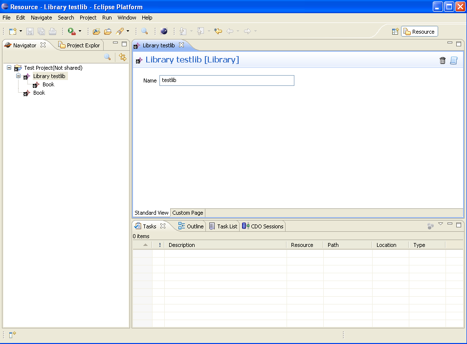
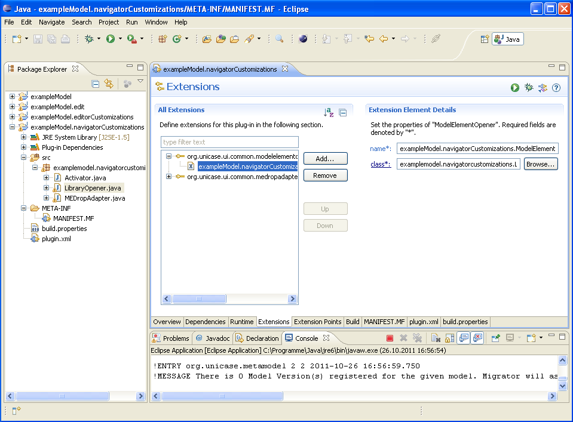
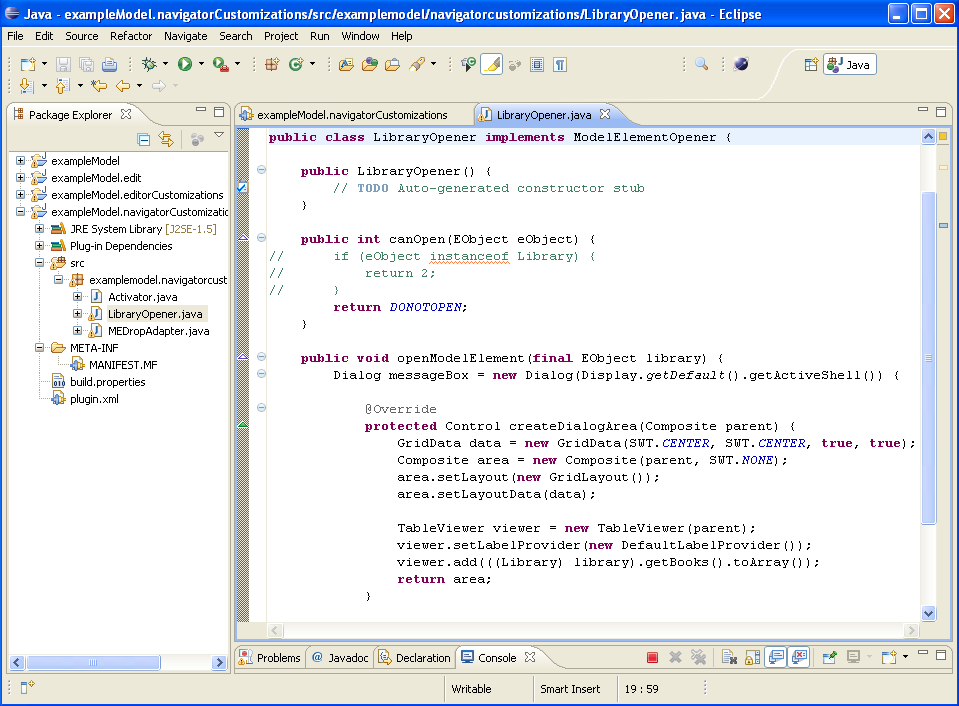
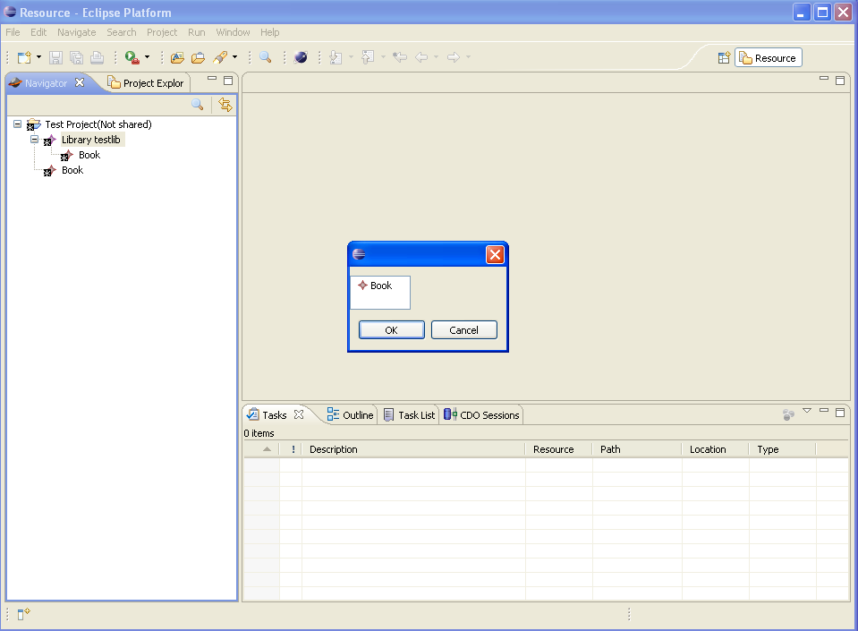

In your running EMFCP instance, which contains the exampleModel (see other tutorials), you can add a new library and doubleclick it, which opens the default editor.

Step 2: Check the extensionOpen the running eclipse and the plugin.xml in exampleModel.navigatorCustomizations. In the org.unicase.common.modelelementopener extension you can see the LibraryOpener class, where to modify the behaviour. To add a new ModelElementOpener you just need a new extension and create a new class similar the class described in step 3.

Step 3: Modify the ModelElementOpener classIn the LibraryOpener you have two methods:

Step 4: Try the new behaviourAfter this you can restart the EMFCP instance and doubleclick the library. You will see that it now shows the described dialog.
